UD4: PORTFOLIO - ESTRUCTURES DE DADES I FORMULARIS¶
INTRODUCCIÓ¶
Sens dubte, un dels elements que possibiliten el dinamisme en les aplicacions web són els formularis, que permeten a l'usuari interactuar amb la lògica de negoci implementada en la part servidor. Es tracta d'un element fonamental perquè l'usuari participe en el procés, i per això cal prestar especial atenció al seu disseny per tal d'assegurar una correcta usabilitat i accessibilitat. Això està molt lligat al disseny d'interfícies, que s'abordarà en un mòdul separat.
En aquesta unitat veurem, primerament, com dur a terme la gestió d'estat en aplicacions web (basades en MVC), per a continuació abordar la creació de formularis en PHP, els diferents mètodes HTTP que suporten l'enviament de dades al servidor, controls de validació, seguretat, així com la recuperació de dades.
Una vegada vist el bàsic sobre formularis en PHP, enriquirem la nostra aplicació web del portfolio mitjançant diferents funcionalitats basades en formularis: contacte, login/logout, creació i manteniment de projectes, llistats, etc.
AVALUACIÓ¶
El present document, junt amb el seu corresponent butlletí d'activitats (publicat addicionalment), cobreixen els següents criteris d'avaluació:
| RESULTATS D'APRENENTATGE | CRITERIS D'AVALUACIÓ |
|---|---|
| RA3. Escriu blocs de sentències embeguts en llenguatges de marques, seleccionant i utilitzant les estructures de programació. | e) S'han utilitzat formularis web per interactuar amb l'usuari del navegador web. f) S'han emprat mètodes per recuperar la informació introduïda en el formulari. |
| RA4. Desenvolupa aplicacions Web embegudes en llenguatges de marques analitzant i incorporant funcionalitats segons especificacions. | a) S'han identificat els mecanismes disponibles per al manteniment de la informació que concerneix a un client web concret i s'han assenyalat els seus avantatges. b) S'han utilitzat mecanismes per mantenir l'estat de les aplicacions web. c) S'han utilitzat mecanismes per emmagatzemar informació en el client web i per recuperar el seu contingut. |
GESTIÓ DE L'ESTAT¶
Com es va comentar en la UD1, la base de la comunicació en les aplicacions web és Internet, on la pila de protocols utilitzada és TCP/IP. En l'últim nivell, el d'aplicació, el protocol utilitzat és HTTP (o HTTPS). Aquest protocol va ser l'escollit per la seua idoneïtat per a aquest tipus de comunicacions, però al mateix temps també ens limita en una sèrie d'aspectes.
El punt fonamental que ens va a impactar en el desenvolupament d'aplicacions web és la seua falta de control d'estat. És a dir: el client i el servidor coneixen de l'existència de l'altre només quan es produeix una petició al servidor, per part del client; fora d'aquesta interacció, no es conserva cap tipus d'informació entre una petició i la següent. El servidor pot estar rebent peticions des de diferents navegadors, en màquines diferents, i no té forma de distingir unes de les altres. Per al servidor són totes iguals.
Això ens impedeix particularitzar l'experiència de l'usuari en el nostre lloc web depenent d'accions preses amb anterioritat. Per exemple: podríem donar una sèrie de missatges de benvinguda o iniciació en la nostra aplicació web la primera vegada que accedeix l'usuari; una vegada aquest dona la seua conformitat o dona per acceptada la informació, ja no es tornarien a mostrar aquests missatges (l'aplicació seria capaç de recordar una acció anterior de l'usuari). Aquests missatges podrien ser un mini-tutorial, missatges d'acceptació de cookies, etc.
En definitiva, el protocol HTTP deixa al programador/a la tasca d'implementar aquest control d'estat entre peticions.
Existeixen diverses estratègies per poder gestionar l'estat entre peticions HTTP, depenent de l'arquitectura web que estiguem utilitzant. A continuació es mostra un quadre resum de les alternatives que utilitzarem al llarg del curs, des del punt de vista del desenvolupament en el costat servidor, depenent de l'arquitectura web amb la qual estiguem treballant:
| Tipus de projecte | Gestió de l'estat |
|---|---|
| PHP (MVC) | Es realitzarà mitjançant dos objectes de PHP: - Cookies - Sessions |
| Django (MVC) | També s'utilitzarà el concepte de cookie i sessió, encara que amb les eines pròpies del framework. |
| Django Rest Framework (API Rest) | Es durà a terme en la part client (ja que els serveis REST no conserven estat), depenent de si s'està utilitzant o no un framework. En cas d'utilitzar framework existeixen mòduls específics per a aquesta funcionalitat (Redux per a React.js, o Vuex per a Vue.js, per exemple). |
En els següents subapartats es detalla l'ús de cookies i sessions en PHP (el primer dels casos). La resta de possibilitats es tractarà en les unitats corresponents (ja pertanga a la part client, o servidor).
Cookies persistents¶
Les anomenades cookies són en realitat fitxers de petit tamany que el servidor envia al client (navegador web) i s'emmagatzemen en el dispositiu del client, agrupant-les per lloc web.
Si visitem un lloc web que requereix emmagatzemar cookies en el dispositiu client cal advertir a l'usuari d'això i del propòsit d'aquestes cookies.
Si consultem per exemple el lloc web de l'ajuntament d'Elx, podrem veure, mitjançant les eines de desenvolupador del navegador (depèn del navegador que estiguem utilitzant) les cookies que s'han emmagatzemat. Podem veure en el panell de l'esquerra les cookies guardades, per cada lloc web:
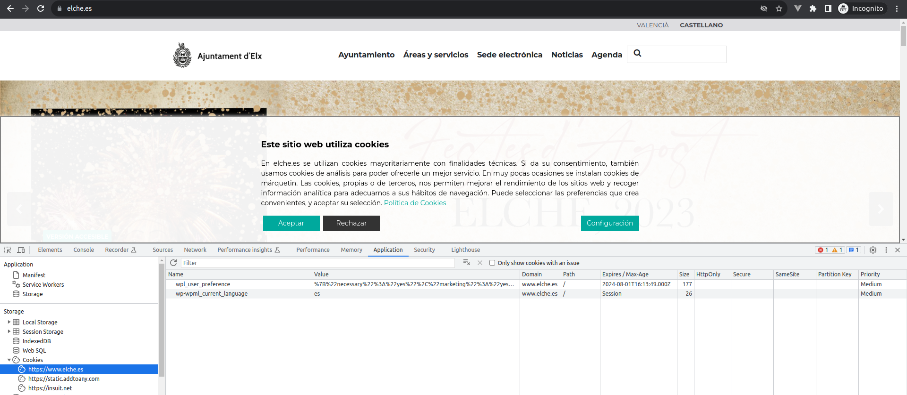
Per ser la primera vegada que accedim al lloc web, ens apareix el missatge d'acceptació de cookies. En aquest cas tenim només 2 cookies, però si acceptem l'avís, ens apareixeran unes quantes més:
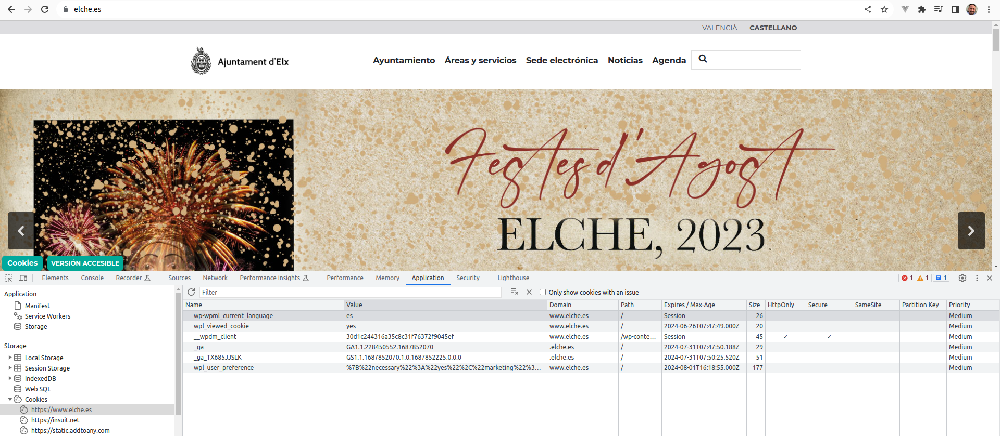
En el cas de elche.es, podem veure que es guarden, entre altres, les cookies "wpl_viewed_cookie" i "wp-wpml_current_language". Segons el prefix d'aquests noms, tot apunta que són cookies creades pel CMS (Content Management System) anomenat Wordpress, en el qual es basa aquest lloc web (la qual cosa es pot veure clarament al analitzar el lloc web amb l'eina builtwith).
Si, en lloc d'escollir castellà com a idioma, triem valencià, veurem que el valor de la cookie "wp-wpml_current_language" canvia al valor "va". Per tant, aquesta cookie serveix al servidor per saber en quin idioma prefereix l'usuari que se li presente la interfície web.
Fixem-nos en el següent: la columna "Expires / Max Age" conté valors de dates amb marques de temps específiques, que indiquen quan deixaran de ser vàlides les cookies, excepte per a dues d'elles, en les quals indica "Session". El significat d'aquest valor l'analitzarem en el següent punt sobre sessions del navegador.
Ara, cada vegada que naveguem per aquest lloc web, el servidor consultarà el valor de les cookies del client, i podrà donar una resposta personalitzada en funció dels seus valors.
Per saber el bàsic sobre cookies en PHP, revisem aquest enllaç de W3Schools, que utilitzarem posteriorment en les activitats.
Les cookies creades segons l'enllaç anterior tenen una data de caducitat determinada. A aquestes cookies se les denomina cookies persistents. En el següent apartat coneixerem les cookies de sessió.
Sessions del navegador¶
El concepte de sessió de navegador identifica una forma d'agrupar determinades variables que estan associades a un navegador web concret, i durant el temps en què aquest navegador està obert. Si obrim una pestanya nova en el mateix navegador, es compartirà la mateixa sessió, però si obrim un altre navegador dins del mateix dispositiu (o el mateix, però en mode incògnit), es crearà una sessió diferent per a aquest navegador.
Però, com és possible que el servidor puga saber quan iniciar una nova sessió i quan no? La resposta es resol mitjançant l'ús de cookies: al visitar un lloc web mitjançant un navegador, el servidor rep la petició HTTP i analitza si existeix una cookie de sessió; si no existeix una cookie de sessió genera un ID nou de sessió i l'envia al navegador, on s'emmagatzema. La següent vegada que es navega dins d'aquest lloc web (i sense haver tancat el navegador) el servidor consulta el valor de les cookies, entre les quals està l'ID de sessió. El servidor rep l'ID de sessió, i recupera les variables associades. Això es mostra en el següent esquema:
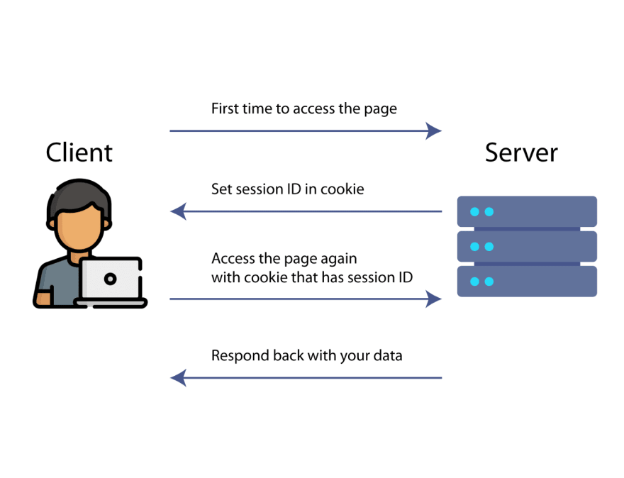
La diferència respecte a les cookies persistents és que la informació sobre les diferents sessions de navegador es guarda en el servidor, no en el costat client.
Anem a esbrinar un poc més sobre les cookies de sessió del lloc web que estàvem provant. Segons la captura de pantalla de l'apartat anterior, les dues cookies de sessió emmagatzemades són:
- wp-wpml_current_language: identifica les preferències de l'usuari respecte a l'idioma. Té, per defecte, el valor "es".
- __wpdm_client: és una cookie de sessió utilitzada pel plugin "Wordpress Download Manager", que li permet compartir funcionalitats al navegar entre les pàgines web del lloc.
Centrem-nos en la primera d'elles. El seu comportament és:
- Al obrir el navegador i visitar el lloc web, sempre té el valor "es".
- Al canviar a "Valencià", pren el valor "val".
- Al tancar el navegador i tornar-lo a obrir, té el valor "es".
Aquests passos impliquen que, cada vegada que l'usuari accedeix al lloc web, després d'haver-lo tancat, ha de tornar a triar la seua preferència d'idioma, si no coincideix amb el valor per defecte. Preguntem-nos: és una cookie de sessió el més adequat en aquest cas?
Per aconseguir una millor experiència d'usuari, necessitaríem que la preferència de l'idioma durara més enllà de la sessió del navegador. En aquest cas, seria millor implementar la cookie d'idioma mitjançant una cookie persistent (amb una data d'expiració molt allunyada en el temps), i no una cookie de sessió.
Fins i tot podríem arribar a emmagatzemar aquesta preferència de l'usuari en una base de dades, si l'usuari haguera estat identificat mitjançant un procés d'autenticació (que no és el cas perquè el lloc web en qüestió està dedicat a usuaris anònims). Analitzarem aquest cas en el següent apartat.
En aquest enllaç es mostra una introducció al comportament general de les cookies de sessió.
En classe, revisem mitjançant W3Schools com gestionar cookies de sessió amb PHP.
Sessions d'usuari¶
El següent pas en el manteniment de l'estat d'una aplicació web seria poder identificar de forma concreta quin usuari està accedint a la nostra aplicació, i particularitzar determinats aspectes depenent de les seues preferències. Per a això, hauríem primer poder verificar que l'usuari és qui diu ser, per així llavors associar-li determinats paràmetres.
Per tant, una sessió d'usuari s'estableix quan l'usuari completa exitosament el procés d'autenticació en el sistema. Després d'aquest procés, l'usuari obté accés a una sèrie de privilegis als quals no tenia accés abans de proporcionar les seues credencials, i aquests privilegis tindran efecte durant un temps determinat pel servidor. Aquests privilegis poden estar agrupats en conjunts de privilegis anomenats perfils d'usuari: en la part client, els perfils d'usuari poden ajudar a conformar la interfície d'usuari (mostrar o ocultar opcions depenent dels privilegis), i en la part servidor determinen les accions de la lògica de negoci que l'usuari pot dur a terme.
En aquest interval de temps, l'usuari pot anar triant opcions a través de l'aplicació per personalitzar la seua experiència (com per exemple, l'idioma), i quin millor lloc per emmagatzemar aquestes preferències que una base de dades en el costat servidor, on la informació no està exposada a possibles vulnerabilitats del costat client.
Encara així, necessitem emmagatzemar alguna cosa en el costat client? Almenys, hauríem de guardar alguna cosa que identifique l'usuari, o més bé, alguna cosa a través de la qual el costat servidor puga recuperar la informació de l'usuari. Això s'aconsegueix a través de l'identificador de sessió, que es genera en el costat servidor i es guarda en el costat client després del procés d'autenticació. Amb només l'identificador de sessió, el costat servidor és capaç de recuperar tot el que necessita sobre l'usuari i les seues preferències. L'esquema general d'aquests passos es veu en la següent figura:
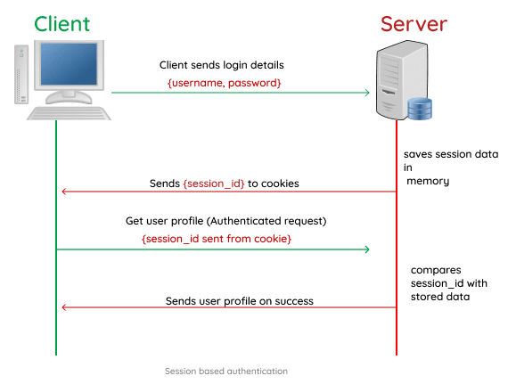
NOTA: L'esquema anterior aplica a arquitectures web basades en el MVC, en el cas de serveis REST l'esquema d'autenticació és diferent.
La implementació d'aquest procés se sol dur a terme mitjançant extensions d'un framework (com Laravel, Node.js, Django...) i desenvolupar-lo des de zero pot ser problemàtic, ja que la solució pot no ser prou robusta com per abastar tots els possibles riscos de seguretat. Normalment, les solucions proporcionades pels frameworks són prou completes i han estat provades per la comunitat de desenvolupadors i usuaris, per la qual cosa solen ser prou fiables com per no optar per implementar-les des de 0.
En les activitats realitzarem un procés de login rudimentari, a mode d'exemple, però en cap cas serà la base per a una aplicació web a utilitzar en un sistema real.
Seguretat¶
A més dels riscos intrínsecs d'exposar un equip servidor en Internet, qualsevol informació que viatge per la xarxa i puga ser emmagatzemada en equips client és susceptible també de ser capturada i utilitzada per a fins maliciosos.
L'ús de les cookies des del punt de vista de la ciberseguretat és un tema a tractar de forma separada, i fora dels objectius d'aquest curs.
En aquest enllaç es presenta una introducció als riscos de seguretat que implica l'ús de les cookies.
En aquest enllaç pots aprofundir en el tipus d'atacs que intenten fer un ús maliciós de les cookies de sessió d'usuari.
Altres usos de les cookies¶
Les cookies poden ser utilitzades per guardar hàbits de navegació de l'usuari o per mantenir identificades les sessions dels usuaris, com hem vist fins ara.
Però una altra aplicació de les cookies es troba en l'àmbit de recopilació de dades de navegació dels usuaris, rastreig, anàlisis estadístics... En aquest enllaç trobaràs una visió més àmplia de l'ús de les cookies en les aplicacions web actuals, que excedeix als objectius del present curs.
FORMULARIS¶
Teoria¶
En el següent enllaç trobaràs el bàsic sobre els formularis en PHP.
Revisem els dos enllaços en classe.
Després de la lectura dels enllaços i a la vista dels exemples podem extraure el funcionament general d'una pàgina que continga un formulari, que serà invocada mitjançant dos mètodes:
-
GET, serà el cas en què s'arribe a la pàgina mitjançant una navegació per part de l'usuari a través dels enllaços del lloc web. Es poden donar dos casos:
- El formulari es troba buit, no cal recuperar informació per pre-informar els camps del formulari, i el propòsit és crear dades noves. Per regla general, no seria necessari una lògica que s'executara davant una crida GET al formulari.
- S'arriba al formulari prement un element en una llista anterior, de manera que el que es pretén és modificar les dades que s'han consultat. En aquest cas, es necessita una lògica que recupere informació d'una font de dades (una base de dades és el més habitual). El més habitual és que s'envie un ID a través de la URL mitjançant el mètode GET, i la pàgina del formulari prenga aquest ID, consulte en la base de dades, i pre-informe els camps del formulari amb la informació recuperada, per poder ser posteriorment modificada mitjançant POST.
-
POST, es tracta del cas en què s'haja premut sobre el botó tipus "submit" del formulari. Normalment un formulari invoca al propi script PHP en què es troba, perquè en aquest script s'inclou la lògica a aplicar quan el mètode és POST. Per tant, la pàgina s'invoca a si mateixa per poder executar una altra part de la seua lògica (validació i emmagatzematge en BBDD, normalment) pertanyent al mètode POST.
NOTA: El mètode GET no és adequat per enviar dades des d'un formulari al servidor, ja que els paràmetres s'envien per URL i poden ser capturats, la qual cosa implica un problema de seguretat.
Es podria dir que un script PHP amb formulari està preparat per a aquestes situacions: l'accés en mode consulta al formulari (normalment per navegació) i la submissió del seu formulari per al processament de la informació introduïda o modificada.
Projecte¶
En aquest pas del projecte anem a crear un formulari de contacte, perquè potencials empreses o clients ens puguen contactar per proposar-nos un projecte o una oferta de treball.
Ara que ja sabem crear formularis, anem a implementar una veritable pàgina de contacte. Fins ara mostràvem una fitxa d'autor en contacte.php, però seria més convenient reestructurar l'aplicació en aquest sentit.
Primer anem a crear una nova opció de menú que siga "SOBRE MI", on anem a moure el contingut actual de contacte.php, quedant el menú de la forma:
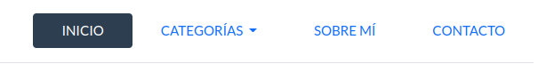
Creem també un fitxer sobre_mi.php que continga el que abans contenia contacte.php:
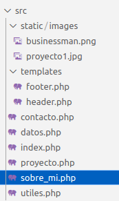
I afegim un enllaç (en forma de botó) en la pàgina SOBRE MI que ens porte a sobre_mi.php, quedant el codi del següent mode:
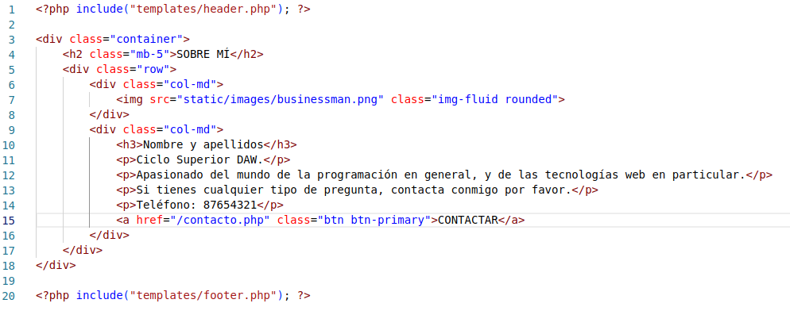
(S'han realitzat canvis en les línies 4 i 15)
ACTIVITAT: afegeix un enllaç a contacte.php en el footer de la pàgina, en la secció "Contacta amb nosaltres".
És el moment de buidar contacte.php:
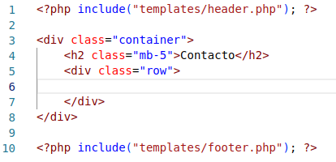
Ara ens plantegem quins camps necessitem perquè un possible usuari vulga contactar amb nosaltres. Es proposen els següents:
| Camp | Requisits |
|---|---|
| Nom i cognoms | Obligatori. |
| Obligatori, i ha de ser un e-mail correcte. | |
| Número de telèfon | Obligatori, i ha de ser un número correcte. |
| Particular/empresa | Obligatori, camp multiselecció. |
| Descripció | Obligatori, text lliure. |
| Fitxer | Opcional, però si se'n puja un ha de ser en format .pdf. |
Anem a anar pas a pas, inserint cadascun dels camps del formulari. Per donar estil als camps anem a utilitzar els formularis de Bootstrap.
Nom i cognoms¶
Comencem amb el propi formulari i amb el camp "Nom i cognoms". Inserim el següent codi en contacte.php:
<form action="<?php echo htmlspecialchars($_SERVER["PHP_SELF"]);?>" method="POST">
<div class="mb-3 col-sm-6 p-0">
<label for="nombreApellidosID" class="form-label">Nom i cognoms</label>
<input type="text" name="nombreApellidos" class="form-control" id="nombreApellidosID" placeholder="El teu nom i cognoms">
</div>
<button type="submit" class="btn btn-success">Enviar</button>
</form>
Aquest camp ha de ser obligatori. Amb aquest codi complim les condicions? La resposta és no. Podríem utilitzar l'atribut "required" d'HTML5 per solucionar-ho? En principi aquest atribut faria aquest camp del formulari obligatori, però tindria els seus inconvenients. Anem a afegir-lo:
<input type="text" name="nombreApellidos" class="form-control"
id="nombreApellidosID" placeholder="El teu nom i cognoms"
required >
Ara, si premem el botó Enviar sense introduir cap text en el camp obtindrem aquest missatge:
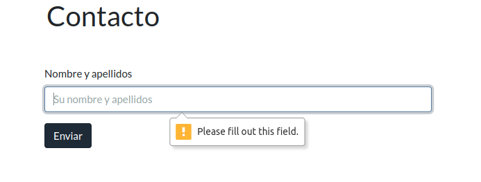
No sembla un mal missatge d'error, en principi, però no podem triar el text concret a mostrar a l'usuari, és un missatge massa genèric, a més no segueix els patrons de Bootstrap.
Però compleix el seu propòsit? Realment obliga l'usuari a informar aquest camp? Un usuari amb coneixements d'HTML podria inspeccionar el codi i eliminar aquesta restricció fàcilment amb el navegador:
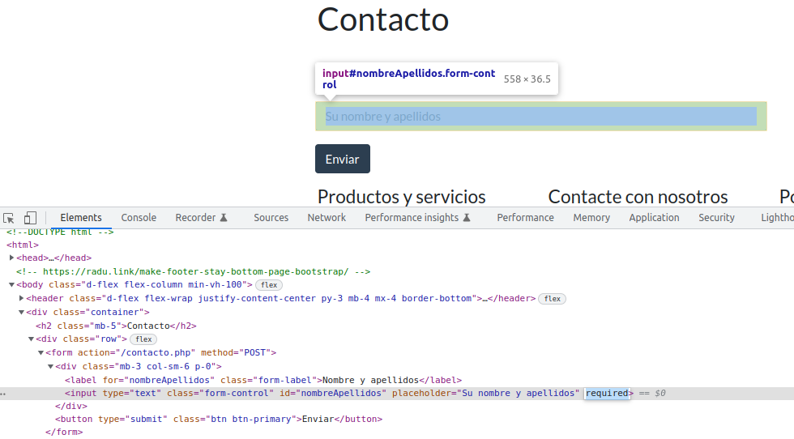
És a dir, si eliminem aquest atribut en el codi de l'HTML que resideix en el nostre navegador ens podríem saltar la restricció d'obligatorietat. Per tant la pregunta és: com ens podem assegurar que realment s'envien els valors correctes des d'un formulari independentment que la part client es puga veure manipulada? La resposta és: en el costat servidor.
A més, podríem complementar tot això mitjançant JavaScript i que la interacció amb l'usuari fora molt més adequada i personalitzada.
Al final es produeix el que s'anomena doble validació:
- En client, com un primer filtre, per controlar molt millor la interacció amb l'usuari.
- En servidor, per assegurar-nos que es compleix la lògica de negoci i no es processen o inserixen valors inconsistents en la base de dades.
La conclusió a extraure d'aquest raonament és que és la part servidor la que ha d'assegurar que s'implementen les validacions corresponents, i la part client s'ocupa de la interacció amb l'usuari. Això és especialment crític en sistemes basats en serveis REST, en els quals aplicacions de diferent tipus (aplicacions web, apps, aplicacions d'escriptori, altres sistemes fins i tot...) utilitzen els mateixos serveis web d'un mateix servidor. Ha de ser la part servidor qui assegure que les dades són d'acord amb les especificacions, així com sanititzar les dades introduïdes per part del client, per evitar possibles situacions no desitjades
Aquesta metodologia se segueix independentment de la tecnologia i el model de programació que estiguem utilitzant, i ve provocada per les característiques de l'arquitectura web utilitzada (client/servidor) i la naturalesa de la comunicació entre ambdues parts (protocol HTTP).
Per tot això, anem a introduir la lògica de validació mitjançant PHP. Primer anem a definir en utiles.php la funció de neteja test_input que es discuteix en aquest enllaç:
function test_input($data) {
$data = trim($data);
$data = stripslashes($data);
$data = htmlspecialchars($data);
return $data;
}
Importem utiles.php en contacte.php.
Anem també a definir una variable en contacte.php que continga un missatge d'error definit per nosaltres, anomenada nameErr. El codi quedaria de la següent manera:
<?php
$nameErr = "";
if ($_SERVER["REQUEST_METHOD"] == "POST") {
if (empty($_POST["nombreApellidos"])) {
$nameErr = "Per favor, introdueix nom i cognoms";
}
}
?>
<form action="<?php echo htmlspecialchars($_SERVER['PHP_SELF']);?>" method="POST">
<div class="mb-3 col-sm-6 p-0">
<label for="nombreApellidosID" class="form-label">Nom i cognoms</label>
<input type="text" name="nombreApellidos" class="form-control" id="nombreApellidosID" placeholder="El teu nom i cognoms">
<span class="text-danger"> <?php echo $nameErr ?> </span>
</div>
<button type="submit" class="btn btn-success">Enviar</button>
</form>
Anem a provar-ho:
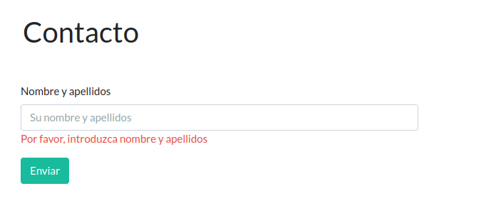
Estem ja satisfets amb el resultat? Molt, però no del tot. Som bastant perfeccionistes, i ens preguntem com podríem deshabilitar el botó Enviar fins que el camp "Nom i cognoms" no continga un valor. Això seria la situació ideal: no deixar enviar res al servidor que ja sabem que no és correcte, reduïm el treball que el servidor ha de dur a terme. Però, com podríem deshabilitar el botó Enviar quan es detectara que algun dels camps del formulari no té un valor correcte, abans d'enviar-lo al servidor? Per a això cal afegir més interactivitat en la part client mitjançant JavaScript, ja siga mitjançant llibreries específiques o mitjançant frameworks reactius (com Vue.js, React, Angular, Svelte...). Tot això es complementarà amb la part de Desenvolupament en Client.
Ens queda alguna cosa per fer? En principi tot sembla funcional, fa el que ha de fer, però: és segur? La resposta és: es pot millorar la seguretat. Per què no és del tot segur? perquè no estem controlant el contingut que s'està enviant en el camp, es pot enviar qualsevol tipus de caràcter, codi maliciós, etc. Llavors, com fem perquè un nom i cognoms semblen realment un nom i cognoms i res més? Podem aplicar una expressió regular al text que s'envie en el formulari completant les validacions del costat servidor, de la forma:
if ($_SERVER["REQUEST_METHOD"] == "POST") {
if (empty($_POST["nombreApellidos"])) {
$nameErr = "Per favor, introdueix nom i cognoms";
} else {
$name = test_input($_POST["nombreApellidos"]);
if (!preg_match("/^[a-zA-Z-' ]*$/",$name)) {
$nameErr = "Només es permeten lletres i espais.";
}
}
}
Si no recordes què són les expressions regulars, ho pots revisar en aquest enllaç. Sent pragmàtics, ací tens una recopilació d'algunes expressions regulars molt utilitzades. Normalment una correcta cerca en Internet et donarà l'expressió regular que necessites.
Podríem complicar l'expressió regular un poc més perquè validara que s'envia un nom i dos cognoms, com es discuteix en aquest enllaç, però de moment ho deixarem com està.
NOTA IMPORTANT: en HTML, mitjançant l'atribut pattern també podem afegir una expressió regular a un element input, però tindríem el mateix problema que amb l'atribut required. Per tant és més convenient fer aquesta validació en el costat servidor.
Ara, si intentem introduir qualsevol caràcter que no siga una lletra o un espai el formulari ens tornarà un error:
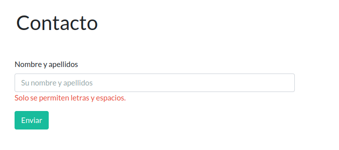
Però estem notant un comportament estrany en el nostre formulari: introduïm un text invàlid i premem Enviar, obtenim el missatge d'error corresponent, però el text desapareix! com podem fer perquè es retenguen els valors dels camps? És molt fàcil, simplement hem d'assignar el valor de la variable $name a l'atribut value de l'element input:
<input type="text" name="nombreApellidos" value="<?php echo $name;?>"
class="form-control" id="nombreApellidosID"
placeholder="El teu nom i cognoms">
D'aquesta manera no desapareixeran els valors del formulari al prémer sobre Enviar.
e-mail¶
Primer afegim l'HTML d'aquest camp i veiem com queda. El situem sota el camp Nom i cognoms:
<form action="<?php echo htmlspecialchars($_SERVER['PHP_SELF']);?>" method="POST">
<div class="row">
<div class="mb-3 col-sm-6 p-0">
<label for="nombreApellidosID" class="form-label">Nom i cognoms</label>
<input type="text" name="nombreApellidos" value="<?php echo $name;?>"
class="form-control" id="nombreApellidosID"
placeholder="El teu nom i cognoms">
<span class="text-danger"> <?php echo $nameErr ?> </span>
</div>
</div>
<div class="row">
<div class="mb-3 col-sm-6 p-0">
<label for="emailID" class="form-label">e-mail</label>
<input type="text" name="email" value="<?php echo $email;?>"
class="form-control" id="emailID"
placeholder="El teu e-mail">
<span class="text-danger"> <?php echo $emailErr ?> </span>
</div>
</div>
<button type="submit" class="btn btn-success">Enviar</button>
</form>
Cal destacar que hem definit l'element input com a tipus "text", en lloc de "email". Això és precisament per evitar les validacions del navegador, com la de l'atribut required o el pattern.
A continuació afegim el fragment de codi PHP que s'encarregarà de validar l'e-mail:
if (empty($_POST["email"])) {
$emailErr = "Per favor, introdueix el teu e-mail.";
} else {
$email = test_input($_POST["email"]);
if (!preg_match("/^(([^<>()\[\]\.,;:\s@\”]+(\.[^<>()\[\]\.,;:\s@\”]+)*)|(\”.+\”))@(([^<>()[\]\.,;:\s@\”]+\.)+[^<>()[\]\.,;:\s@\”]{2,})$/",$email)) {
$emailErr = "Introdueix un e-mail vàlid.";
}
}
Com veiem, l'expressió regular ha canviat. El valor de l'expressió regular s'ha extret d'aquest article (en el qual es mostren tres possibilitats).
També existeix la possibilitat d'utilitzar la funció filter_var de PHP, com es mostra en l'exemple de W3CSchools.
Qualsevol de les dues formes és efectiva.
Telèfon¶
Amb el camp telèfon ocorre semblant al d'email. Afegirem una expressió regular basada en aquest enllaç, per validar números de telèfon:
/\^[9|6]{1}([\d]{2}[-]*){3}[\d]{2}$/
ACTIVITAT: Creem el camp e-mail amb l'expressió regular anterior. Volem que se situe a la dreta de l'e-mail, per a això utilitzem el següent bloc div:
<div class="row">
<div class="mb-3 col-sm-6 p-0">
<!-- ACÍ VA L'HTML DE L'EMAIL -->
</div>
<div class="mb-3 pl-2 col-sm-6 p-0">**
<!-- ACÍ VA L'HTML DEL TELÈFON -->
</div>
</div>
També podem utilitzar com a type "tel", com es mostra en aquest exemple.
Particular o empresa¶
Anem a implementar aquesta opció del formulari mitjançant un camp de selecció múltiple. Per això, el codi HTML queda de la següent manera:
<div class="row mb-4">
<div class="form-check">
<input class="form-check-input" type="radio" name="tipo"
id="particularID" value="particular" <?php if (isset($tipo) && $tipo=="particular") echo "checked";?>>
<label class="form-check-label" for="particularID"> Particular </label>
</div>
<div class="form-check">
<input class="form-check-input" type="radio" name="tipo"
id="empresaID" value="empresa" <?php if (isset($tipo) && $tipo=="empresa") echo "checked";?>>
<label class="form-check-label" for="empresaID"> Empresa </label>
</div>
<span class="text-danger"> <?php echo $tipoErr ?> </span>
</div>
I la validació d'aquest camp serà la següent (ací no és necessari aplicar una expressió regular):
if (empty($_POST["tipo"])) {
$tipoErr = "Per favor, introdueix el tipus de consulta.";
} else {
$tipo = $_POST["tipo"];
}
El resultat queda de la següent manera:
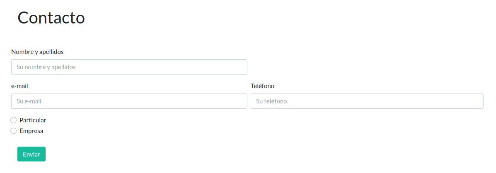
Descripció¶
L'últim dels camps serà una àrea de text, on l'usuari de la nostra aplicació podrà introduir un missatge lliure. Per a això anem a utilitzar l'element textarea, segons el fragment HTML següent:
<div class="row mb-4">
<textarea class="form-control" name="mensaje" id="areaTexto" rows="3" placeholder="Escriu el teu missatge..."><?php print $mensaje;?></textarea>
<label for="areaTexto" class="form-label">Missatge</label>
</div>
if (!empty($_POST["mensaje"])){
$mensaje = test_input($_POST["mensaje"]);
}
Fitxer¶
És molt comú tindre un arxiu associat a un objecte de la nostra aplicació. Normalment tindrem un registre en una taula d'una base de dades, i una de les columnes del registre emmagatzemarà el nom i la ruta al fitxer.
L'opció més immediata serà emmagatzemar l'arxiu en el nostre sistema de fitxers local, que en aquest cas serà el servidor. Aquest servidor serà normalment una màquina virtualitzada, llogada a un proveïdor de hosting (com Amazon Web Services, Digital Ocean, Linode, etc.).
Emmagatzemar els fitxers en el sistema de fitxers local suposa tindre accés immediat als fitxers, però també presenta una sèrie d'inconvenients, entre ells:
- És necessari dimensionar la memòria del servidor perquè s'acomode al volum creixent de fitxers.
- El mateix servidor ha de gestionar la comunicació amb els clients i transferir fitxers. Això impacta en la velocitat de transferència d'informació i processament del servidor.
- Si, per alguna raó, el servidor es torna irrecuperable, es perdran també els arxius.
- Un mateix servidor ha de servir arxius a zones geogràfiques dispars, amb la qual cosa la resposta del servidor es veurà afectada depenent de la localització del client.
- En una arquitectura amb contenidors i amb múltiples servidors treballant com un clúster augmenta la complexitat per emmagatzemar els arxius en els sistemes de fitxers locals.
Per tot això, la tendència actual és delegar l'emmagatzematge i recuperació d'arxius a un servei CDN, ofertat per la majoria dels proveïdors de hosting citats anteriorment. Aquests arxius poden ser, entre altres:
- Arxius que formen part de la nostra base de dades (normalment associats a un registre d'una taula).
- Fitxers estàtics, que són aquells necessaris per a l'aplicació (fitxers CSS, JavaScript, multimèdia...).
- Còpies de la base de dades.
- etc.
Com a mostra, el servei Spaces de Digital Ocean.
Dit tot això, anem a afegir la funcionalitat per pujar fitxers associats a la nostra pàgina de contacte. Anem a utilitzar el camp de pujada de fitxers de Boostrap. Inserim el següent codi HTML sota el camp de missatge:
<div class="row mb-4">
<label for="archivoID" class="form-label">Adjuntar arxiu</label>
<input class="form-control" type="file" id="archivoID" name="archivo">
</div>
<span class="text-danger"> <?php echo $archivoErr ?> </span>
<br>
NOTA: No anem a preocupar-nos en aquest moment pels valors per defecte dels textos "Choose file", o "No file chosen". Si vols provar a canviar-los, pots investigar els següents enllaços: Change the "No file chosen", Change "Choose file".
TEORIA: Revisem aquest enllaç, sobre la pujada d'arxius en PHP.
Anem a passar a completar el projecte. Primer crearem una carpeta "uploads" en la nostra estructura de directoris, per poder emmagatzemar els fitxers pujats:
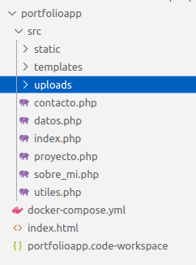
Tenim el directori en el nostre sistema de fitxers, però tenim un problema addicional pel fet d'utilitzar contenidors Docker si estem en un sistema Linux: l'usuari del servidor web Apache, que està funcionant en el contenidor Docker, no té privilegis per escriure fitxers en la ruta /var/www/html/uploads, només per llegir. Per això, hem d'executar la següent comanda, perquè des del contenidor es puguen escriure arxius en la carpeta "uploads". Des de la terminal, situats dins de la carpeta uploads (COMPTE):
chmod -R 777 ./
chmod -R 777 /<ruta_absoluta>/uploads
<form action="<?php echo htmlspecialchars($_SERVER["PHP_SELF"]);?>" method="POST" enctype="multipart/form-data">
if (!empty($_FILES['archivo'])) {
$nombreArchivo = $_FILES['archivo']['name'];
move_uploaded_file($_FILES['archivo']['tmp_name'], "/var/www/html/uploads/{$nombreArchivo}");
if ($nombreArchivo){
$pathArchivo = "uploads/{$nombreArchivo}";
}
}
Però encara ens queda guardar la informació introduïda, per poder recuperar-la posteriorment. Per a això, guardarem la informació en forma de fitxer JSON, per poder recuperar-la en altres parts de l'aplicació (si fora necessari), a mode de base de dades.
Per això, afegim una nova carpeta que emmagatzemarà fitxers JSON, i la anomenarem mysql:
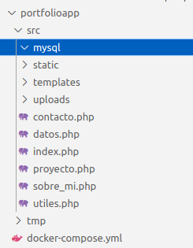
Igual que per a uploads, necessitarem permisos d'escriptura:
chmod -R 777 /<ruta_absoluta>/mysql
if ($nameErr === "" && $emailErr === "" && $phoneErr === "" && $tipoErr === ""){
$contacto = [
"name" => $name,
"email" => $email,
"phone" => $phone,
"tipo" => $tipo,
"mensaje" => $mensaje,
"file" => $pathArchivo,
];
$tempArray = json_decode(file_get_contents('mysql/contactos.json'));
if ($tempArray === NULL){
$tempArray = [];
}
array_push($tempArray, $contacto);
$contactos_json = json_encode($tempArray);
file_put_contents('mysql/contactos.json', $contactos_json);
}
Pàgina de confirmació d'enviament¶
Bé, ja tenim operatiu el formulari, però ara volem mostrar un missatge a l'usuari que indique que tot ha anat correctament durant l'enviament de les dades. Per a això creem una nova pàgina anomenada confirma_contacto.php, amb el següent contingut:
<?php include("templates/header.php"); ?>
<div class="container">
<div class="alert alert-success mt-5">
Has contactat amb nosaltres satisfactòriament. En breu ens posarem en contacte amb tu
</div>
<div>
<a class="btn btn-xs btn-info float-right" href="/"> Tornar a l'inici </a>
</div>
</div>
<?php include("templates/footer.php"); ?>
És per això que anem, de forma excepcional (de moment), a utilitzar un bloc JavaScript per fer la redirecció:
if ($nameErr === "" && $emailErr === "" && $phoneErr === "" && $tipoErr === ""){
$contacto = [
"name" => $name,
"email" => $email,
"phone" => $phone,
"tipo" => $tipo,
"mensaje" => $mensaje,
"file" => $pathArchivo,
];
// https://stackoverflow.com/questions/7895335/append-data-to-a-json-file-with-php
$tempArray = json_decode(file_get_contents('mysql/contactos.json'));
if ($tempArray === NULL){
$tempArray = [];
}
array_push($tempArray, $contacto);
$contactos_json = json_encode($tempArray);
file_put_contents('mysql/contactos.json', $contactos_json);
?>
<script type="text/javascript">
window.location = "http://localhost/confirma_contacto.php";
</script>
<?php
}
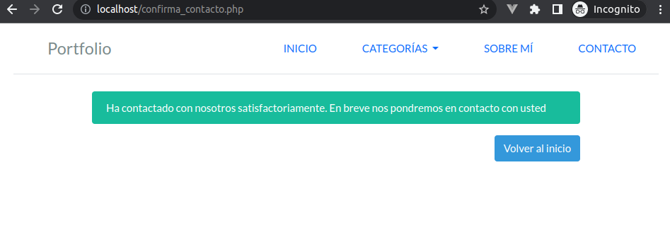
Si consultem el fitxer contactos.json veurem tots els registres que hem creat:
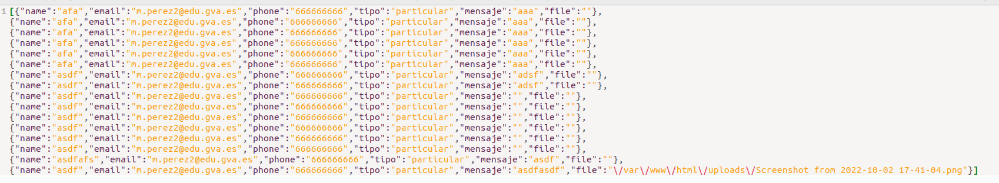
Administració de contactes¶
A la nostra aplicació li falta un petit detall: no som capaços de veure els contactes que ens han realitzat. Per a això, anem a utilitzar el menú ADMINISTRACIÓ creat en la unitat anterior. Al prémer sobre aquesta opció de menú (recorda que només s'activa quan es simula estar autenticat en el sistema), ens portarà a la llista de contactes, que serà la pàgina contacto_lista.php, amb el següent contingut:
<?php include("templates/header.php"); ?>
<?php
$contactosLista = json_decode(file_get_contents('mysql/contactos.json'), true);
?>
<div class="container mb-5">
<h1>Llista de contactes</h1>
<?php if ($contactosLista === NULL) { ?>
<div class="alert alert-info mt-5">
Encara no has sigut contactat
</div>
<?php } else { ?>
<div class="list-group">
<?php foreach ($contactosLista as $contacto): ?>
<a href="#" class="list-group-item list-group-item-action"><?php echo $contacto['email'] ?> - <?php echo $contacto['phone'] ?></a>
<?php endforeach; ?>
</div>
<?php } ?>
</div>
<?php include("templates/footer.php"); ?>
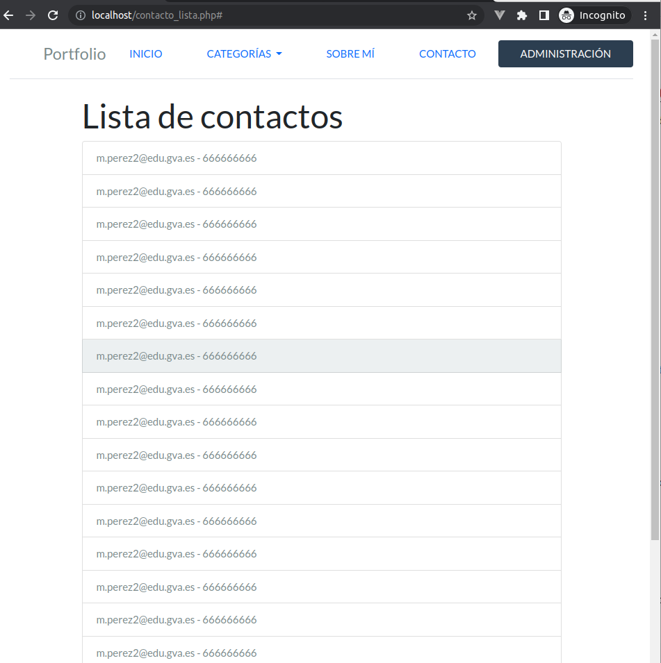
Existeixen diversos aspectes que es podrien millorar:
- A més de l'e-mail i el telèfon, es podria mostrar la data en què s'ha contactat, i poder ordenar per criteri temporal, o filtrar per e-mail, número de telèfon, etc.
- Previsualitzar part del missatge enviat.
- Al prémer sobre cada registre, accedir a una altra pàgina on es mostren els detalls del contacte, així com l'arxiu adjunt (si existeix). En aquest cas hauríem d'haver introduït un ID en cada contacte, per poder passar-lo per paràmetre en la URL a la nova pàgina, i recuperar el detall del contacte (com vam fer en el cas dels projectes).
Anem a abordar el tercer punt. Per a això necessitem emmagatzemar un identificador únic per cada registre en contactos.json. Ho fem amb la següent línia (en contacto.php):
$contacto['id'] = count($tempArray) + 1;
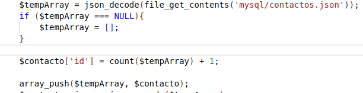
Esborrem el fitxer contactos.json, si ja contenia valors.
Ja podem completar l'atribut href de contacto_lista.php:
<a href="contacto_detalle.php?id=<?php echo $contacto['id'] ?>" class="list-group-item list-group-item-action"><?php echo $contacto['email'] ?> - <?php echo $contacto['phone'] ?></a>
<?php include("templates/header.php"); ?>
<?php
$contacto_id = $_GET['id'];
//El segon paràmetre és perquè torne un array
$tempArray = json_decode(file_get_contents('mysql/contactos.json'), true);
//Presupossem que contactos.json no està buit, però la URL es pot manipular manualment
if ($tempArray === NULL){
$tempArray = [];
} else {
$contacto_key = array_search($contacto_id, array_column($tempArray, 'id'));
$contacto = $tempArray[$contacto_key];
}
?>
<div class="container">
<h1 class="mb-5">Detall del contacte</h1>
<?php if(!empty($contacto)) { ?>
<p><?php echo $contacto['name'] ?></p>
<p><?php echo $contacto['phone'] ?></p>
<p><?php echo $contacto['tipo'] ?></p>
<p><?php echo $contacto['email'] ?></p>
<p><?php echo $contacto['mensaje'] ?></p>
<?php if($contacto['file']) { ?>
<a href="<?php echo $contacto['file'] ?>" class="btn btn-info mb-4"><i class="fa-solid fa-paperclip"></i> ARXIU ADJUNT</a> <br>
<?php } ?>
<?php } else { ?>
<div class="alert alert-danger mt-5">
El contacte no existeix.
</div>
<?php } ?>
<a href="contacto_lista.php" class="btn btn-secondary"><i class="fa-solid fa-arrow-left mr-2"></i> Tornar</a>
</div>
<?php include("templates/footer.php"); ?>
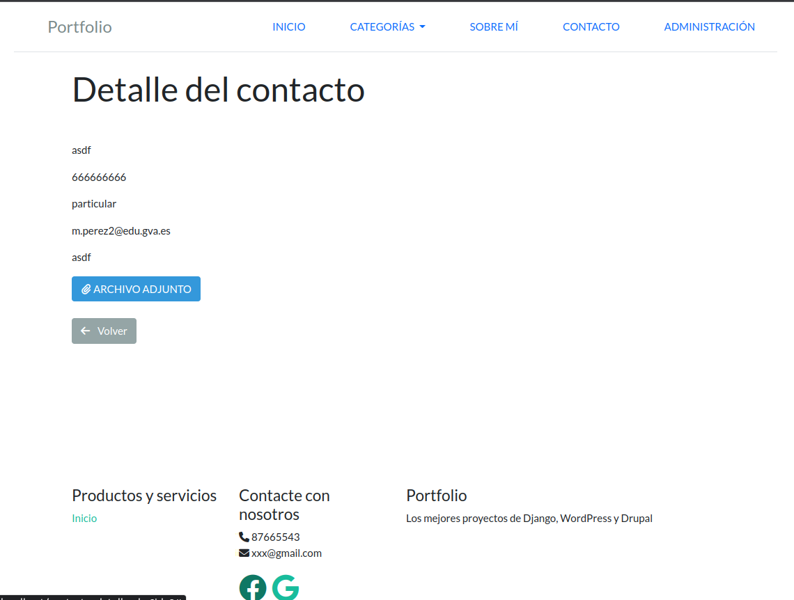